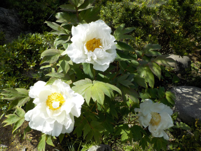
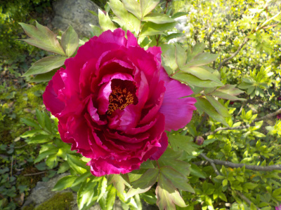
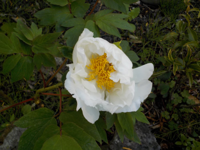
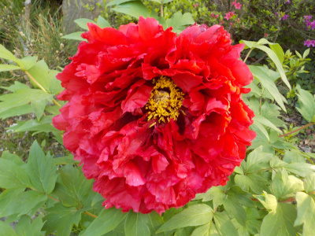
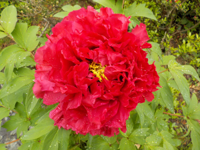
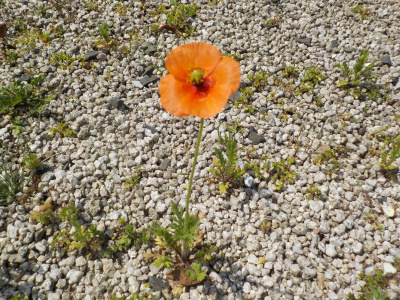
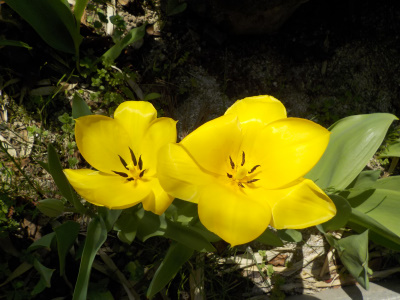

今日もボタンの花見です。
2023/04/22

右下が先に咲いたもの。左が見頃で、上がこれから開くものです。

赤紫のボタンも開花しました。もうちょっとでボタンの時期は終わりですね。
2023/04/22

右下が先に咲いたもの。左が見頃で、上がこれから開くものです。

赤紫のボタンも開花しました。もうちょっとでボタンの時期は終わりですね。
2023/04/17

まだ開ききってないですね。
たぶん明日が見頃かな。

2日前に綺麗だったボタンは萎れてきました。
ボタンの花の期間は短いです。
2023/04/15

このボタンはなんだかしわくちゃな花びらです。ちょっとカーネーションっぽいかな。
2023/04/01

去年沢山抜きましたが、今年もあちこちで芽が出ています。
花を見つけたら抜こうと思っています。
2023/04/01

なんとなく花の形がユニークになりました。もうすぐ散りますね。
過去の日記
畑仕事じゃないよ。